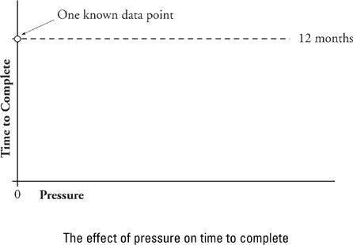
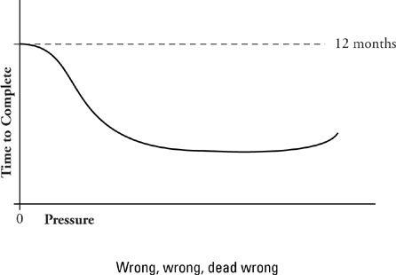

A Model of Pressure and Its Effect
Instead of all the indirect and subtle ways you have to apply pressure, imagine you had a very direct and unsubtle one: a huge lever beside your desk. When you push the lever down, pressure is increased on all your people. When you pull it back, pressure is reduced. Push the lever all the way down and the pressure is at its maximum. Now, what’s your tactic for use of the lever?
As you consider moving the lever one way or another, I have a hunch that there is a tiny voice somewhere inside your head telling you to push the damn thing all the way down to the floor and leave it there forever. This is not, strictly speaking, your voice. Rather, it is the corporate culture speaking through you. An increasingly common bit of our organizational folklore holds that pressure improves performance and that maximum performance can occur only in the presence of maximum pressure. This idea, though deeply embedded in our culture, doesn’t stand up to examination in the light of day.
In order to cast some light on the matter, I offer the following gedanken experiment: Suppose you could know that a given project would take your team of three workers exactly twelve months to complete in a total absence of pressure. In this scenario, you give the workers no incentive beyond “Let me know when you’re done.” And they’re done in twelve months.
Now further suppose that you have on hand a number of absolutely identically skilled teams who know nothing of each other’s existence. You subsequently assign the same task to a number of these, varying the amount of pressure for each experiment. You note the position of the pressure lever and correlate it to performance (elapsed months to complete the work). When you’ve run, say, a hundred trials, you plot the result into a Pressure vs. Elapsed Time graph of the form shown below. Each point on the graph represents one performance of the work. Initially, you have only one.

Before you read on, I encourage you to commit yourself as to what the graph will look like when you add the other 99 points. What shape will it take on? Will elapsed time be reduced as pressure is applied? If so, by how much? Are the potential savings of time limited? (I haven’t told you too much about the actual work to be done, but remember that it is knowledge work.) Will it be possible to reduce elapsed time by 25 percent or more through the use of pressure? Fifty percent? Once you’ve determined the lever setting that produces minimum elapsed time, what will be the result of pushing it down still more? Is it possible to apply too much pressure? Is it possible to apply enough pressure to result in the work taking longer than twelve months?
Before I show you my own answer, let’s take a look at what seems to be the graph implied by current folklore. I offer this without any endorsement; in fact, I think it is wrong, wrong, dead wrong. But here it is:

In this view, pressure seems to have a huge effect: It can reduce elapsed time by 50 percent or more. If people under no pressure at all can do the work in twelve months, this model suggests that the same people under sufficient pressure might be able to do the same work in five. Increasing pressure beyond this point has no beneficial effect, since people are already proceeding at maximum speed. But it does no harm either. The curve is essentially flat beyond the minimum elapsed time point. That’s handy, since it’s hard to know exactly how much pressure is best; the model counsels you to err on the side of too much pressure.
As a concession to the nutsy granola types, the model grudgingly acknowledges that a truly excessive amount of pressure (the extreme right-hand side of the graph) might actually cause performance decrease. If you are completely unreasonable, it’s possible that people will rebel and begin to slow down.